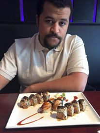

My name is McArdle-Coe i am 21 years old. I am currently attend BDC phase0. after phase 0 i will attend the NYC campus.I also went to temple university for 2 years and majored in information science.
I started plying when i was 14 at Penn Valley airport. I had several instructers anf flew in a Flight Design Ctls.
I initially started in attempt for a sport license but later decided to updrade and go for a private license. Another long time passion is playing cards. I love poker but recently picked up Magic the Gathering a comepetitive card game where plays construct decks for competitve play. You can learn more here MTG.com| Name | age | Breed |
|---|---|---|
| Winnie | 4 | Saint Bernard |
| Angus | 15 | Australian Cattle Dog |
| Dundee | 7 | Australian shepherd |